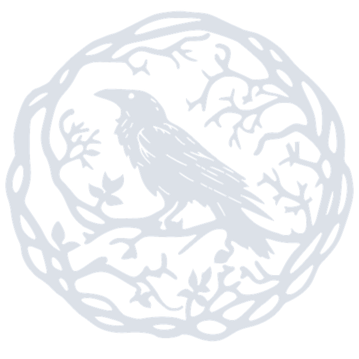

— Taberna de Aventuras —
Un refugio para los que caminan entre dragones, dados y leyendas.
Tu próxima historia comienza aquí.
¿Qué encontrarás aquí?
Próximamente — estos son los grimorios en los que trabaja nuestro DM.
Sesiones de Dungeons & Dragons guiadas por nuestro DM en un ambiente inmersivo y acogedor para novatos y veteranos.
Reserva tu espacio para tu grupo de aventureros. Mesas privadas con ambiente especial para rol y cartas coleccionables.
Pociones de la casa, botanas mágicas y menú temático para acompañar cada sesión de aventuras en el Nido.
One-shots especiales, torneos, eventos de temporada y campañas con historia propia para toda la comunidad.
Sets de dados especiales, miniaturas pintadas, libros de reglas y accesorios para el jugador serio.
Únete al gremio: descuentos, acceso prioritario a eventos y beneficios exclusivos para miembros frecuentes.
El Pergamino de Origen
En las sombras de la ciudad, donde los mapas terminan y las leyendas comienzan, existe un lugar que no aparece en ningún directorio ordinario. El Nido de Ébano es refugio, taberna y portal a mundos imposibles.
Nuestro Dungeon Master ha tejido incontables historias con dados, candiles y voluntad. Aquí cada partida es única, cada mesa tiene su propia mitología, y cada aventurero es bienvenido sin importar su nivel de experiencia.
¿Escuchas el graznido de los kenkus en las vigas? Son buenos presagios. Siéntate. Lanza el dado. Tu historia ya ha comenzado.
Próximas Aventuras
Las fechas se anunciarán pronto. Mantente al tanto en nuestro Facebook.
Una aventura de una noche para conocer el Nido y tu mesa de juego.
Por confirmarCompite en el primer torneo oficial del Nido. Premios para los tres primeros lugares.
Por confirmarInicio de campaña multi-sesión. Cupos limitados — inscríbete con anticipación.
Por confirmar